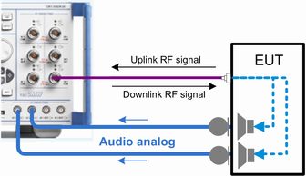

Audio Tests
This test setup is suitable for audio tests - profiles hands-free, hands-free audio gateway, and A2DP.
In addition to the bidirectional RF COM connector as used in the "Tests without USB Interface", the R&S CMW uses also audio connections. The format of audio signal is configurable as digital routed to SPDIF connectors or analog routed to AF connectors.
Connect the EUT with the audio connectors provided by the R&S CMW with an installed audio board. Select the connectors according to the performed audio test. Refer to the user manual of the "Audio Measurement" application for the test setup instructions. The following figure shows an example of a speaker stereo test using analog audio signal routed to AF1 IN and AF2 IN connectors.

Test setup for stereo speaker test